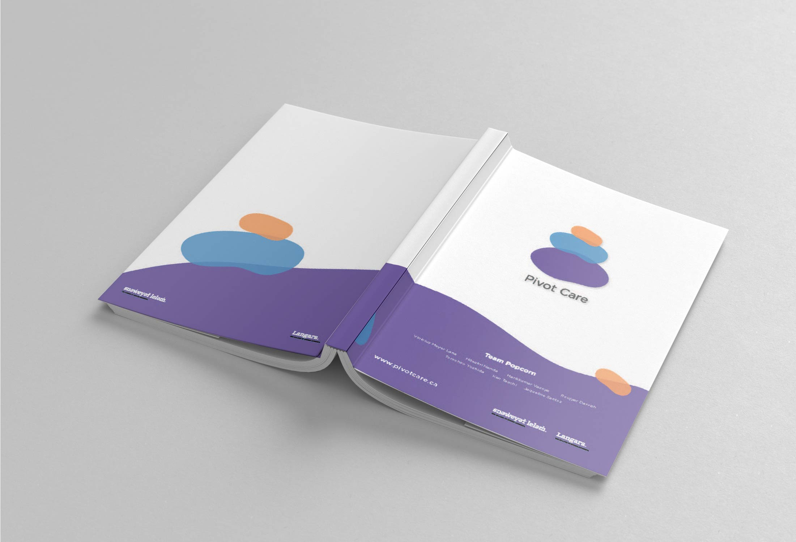
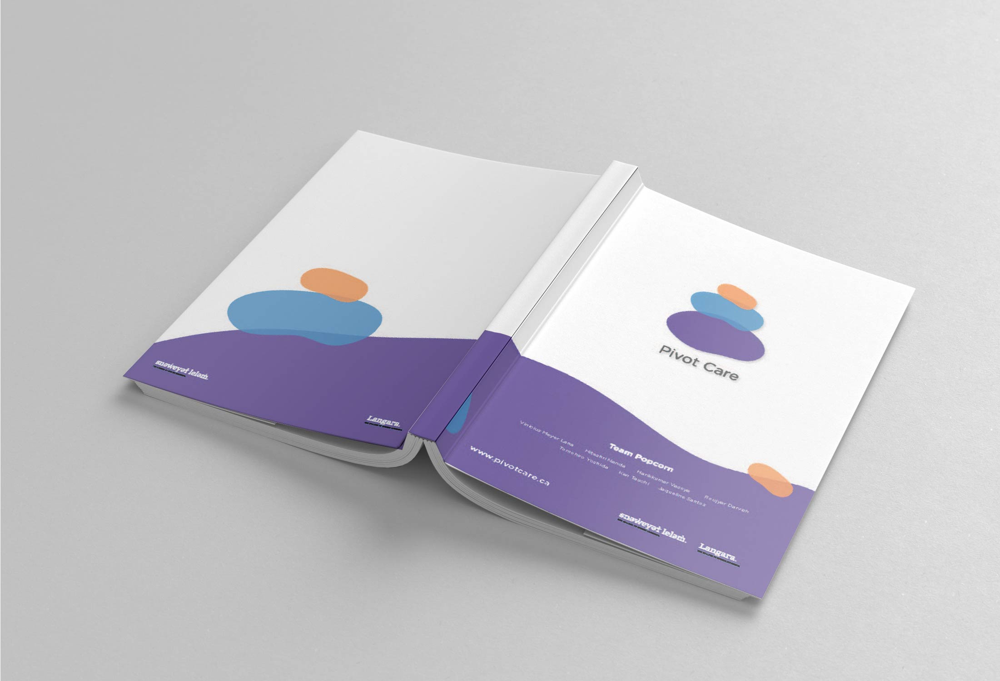

Pivot Care
Mobile App & Web Platform
Pivot Care is a mobile application that helps companies to continue providing fitness and mental health care for their employees while they working from home, as a way to prevent occupational related injuries such as Repetitive Strain Injury (RSI) and Work-Related Musculoskeletal Disorders (WRMD).
Based on the needs of each group of employees or individuals, companies can setup customized exercises programs with the supervision and monitoring of specialized instructors. The main purpose of the application is to provide focused activities related to the specific work environment of the company, such as yoga, meditation, and company-wide stretch breaks.
Here you can see some images of this MVP project developed by a team, that are part of the documentation delivered in Capstone Project, the last term of the post-degree diploma in Web & Mobile Design and Development at Langara College.
Project Role and Responsibilities as
UI and UX designer
Participated in the project from concept to deployment of Android and iOS products working with agile methodology.
Built with the team, the user journey, website userflow and web platform wireframes based on three user journeys.
Built with the team, content strategy designing customer experience for the web app area aligned to the B2B goals.
Produced mobile app clickable prototype and applied usability tests and interview, building report with recommendations.
Produced videos for project social media marketing pack from scratch using Adobe Suite highlighting interaction design.
Acted as a UX writer building tables of content to be used in the application with focus in SEO optimization.
This is the MVP was produced in 11 weeks by a team of 4 developers and 3 designers for Capstone project at Langara College concluding WMDD post graduation course in April 2021. This project was nominated in Capstone Show Case Event by the panelists as "Best in Show" competed this place with other two extensive web and mobile projects.
You can check the Pivot Care Proposal full document and access the website here.
Please contact me to talk more about this project or you can go back to Home to see my other projects.